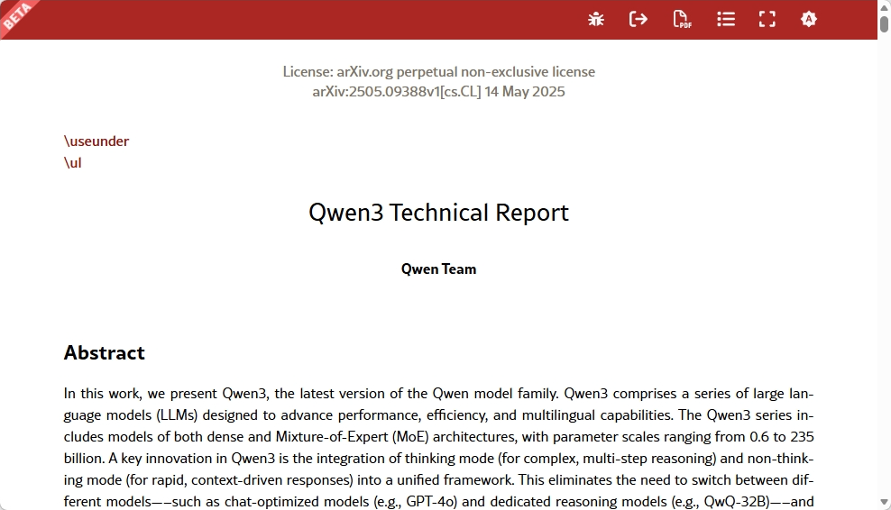
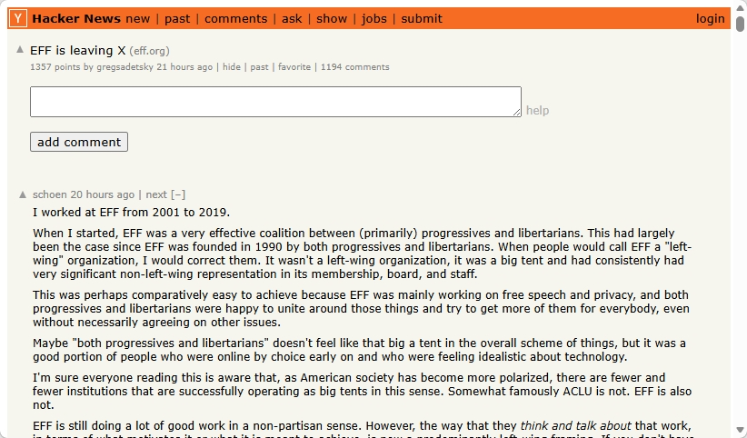
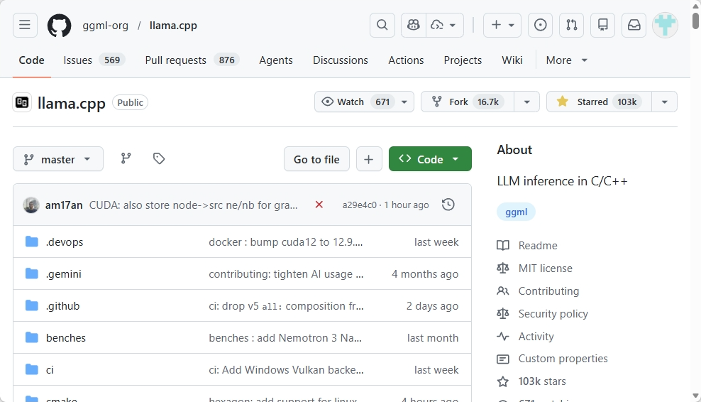
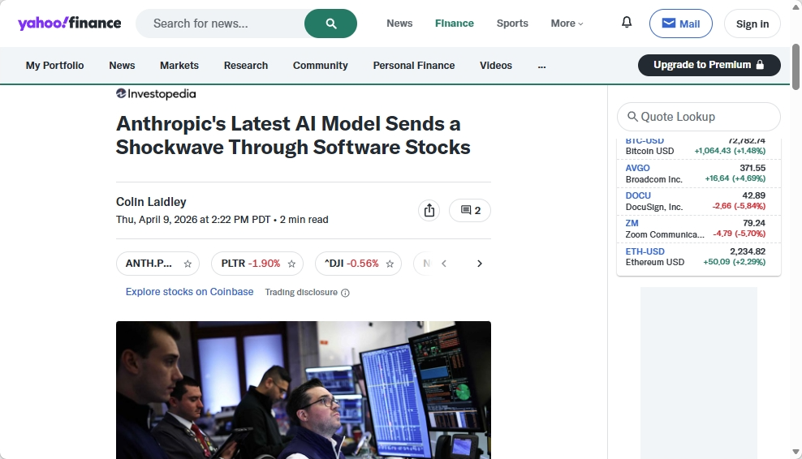

Read arXiv papers faster
Extract the contribution, methodology, and limitations from dense academic writing without losing the structure of the paper.
An AI-powered browser extension for instant content summarization. Get the core insights of any page in seconds.
• Core debate: Context-aware models vs. keyword extraction.
• Top insight: Local storage is key to user privacy.
• Consensus: Streaming output improves perceived speed.

Extract the contribution, methodology, and limitations from dense academic writing without losing the structure of the paper.

Follow long forum threads, capture the strongest arguments, and surface the actual consensus instead of raw comment volume.
Turn long-form reporting into a clean brief with the core facts, context, and the practical takeaway at a glance.

Summarize README files, issues, and code structure so you can judge a repo quickly before digging into the implementation.

Quickly condense earnings stories, stock moves, and macro headlines into a clear investor-focused brief.
Local LLM first, with support for your subscribed models. Customize agents and rules, understand images when the model can for embedded images inside articles.
Select content by dragging with the mouse or by picking a block from the HTML DOM tree.
You can expand a DOM block into a larger content scope before summarization starts.
Automatically selects the best agent or rule based on the page content and context.
SnapPoint comes with built-in specialized agents for papers, forums, and news, while allowing for custom handling.
Supports both local models and major LLM providers for maximum flexibility.
Run privacy-focused models locally or connect to your existing AI subscriptions as you prefer.
Define how different sites should be handled, and swap in your own agent logic when needed.
You can tune the behavior by site, author, or content type without rewriting the workflow.
Uses multimodal models when available to understand images inside the page.
If an embedded image carries the meaning, SnapPoint can first convert it to text before summarizing.
Every summary is stored for later review, search, and comparison.
Turn scattered reading into a personal knowledge trail that grows over time.